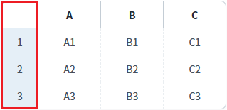
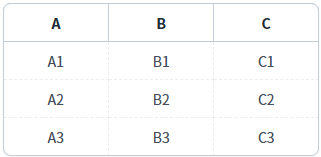
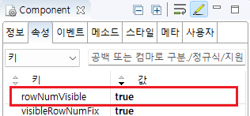

GridView의 'rowNumVisible' 속성을 사용하여, 행의 번호를 표시한 예제입니다.
GridView에 할당된 데이터를 기반으로 행 번호가 출력됩니다.
행 번호는 1부터 시작되며 시작 번호 변경은 GridView의 setStartRowNumber 메소드를 사용하여 설정할 수 있습니다.
행 번호 표시
행 번호 미표시(기본 설정)
예제 영역 '행 번호 표시'에 구성된 GridView에서 테스트합니다.1
실행 결과를 확인합니다.
첫 번째 컬럼에 행 번호가 표시됩니다.
Image 1.브라우저(Chrome) 실행 예시

예제 영역 '(기본 설정) 행 번호 미표시'에 구성된 GridView에서 테스트합니다.1
실행 결과를 확인합니다.
행 번호가 표시되지 않습니다.
Image 2.브라우저(Chrome) 실행 예시

1
GridView의 속성을 정의합니다.
[필수] rowNumVisible="true" //[default:false, true] 행 번호 표시 여부
Image 3.웹스퀘어 스튜디오의 Component View - 속성 설정 예시

Example 1.Source
<!-- gridView 의 소스 본문 예시 --> <w2:gridView rowNumVisible="true"> <!-- 중략 --> </w2:gridView>
rowNumVisible
setStartRowNumber( rowIndex )